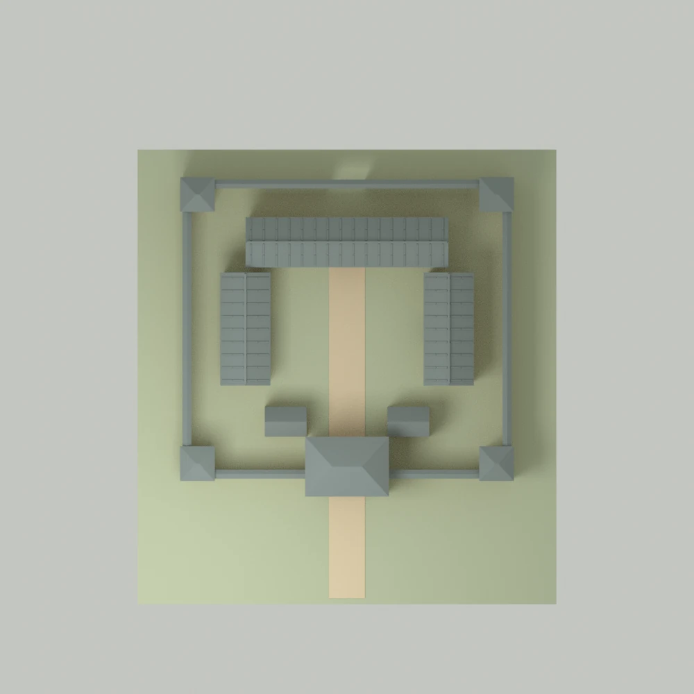
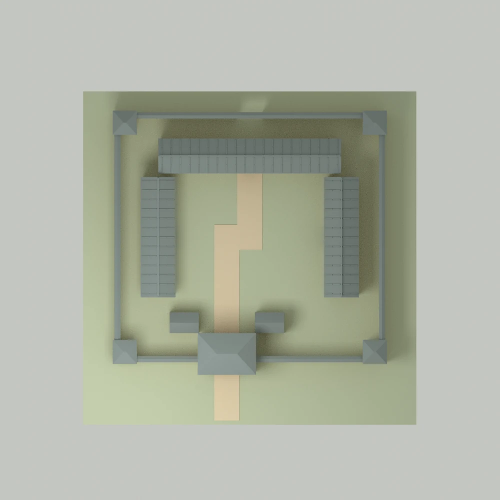
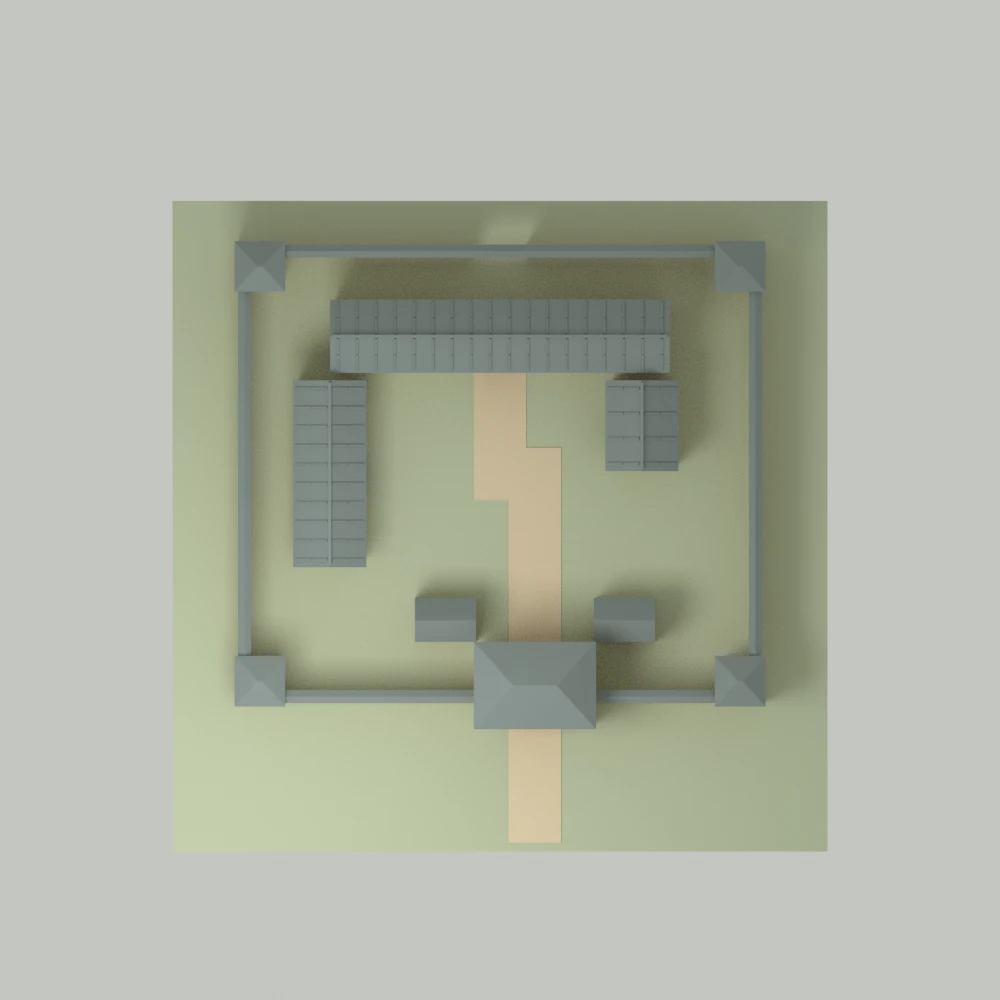
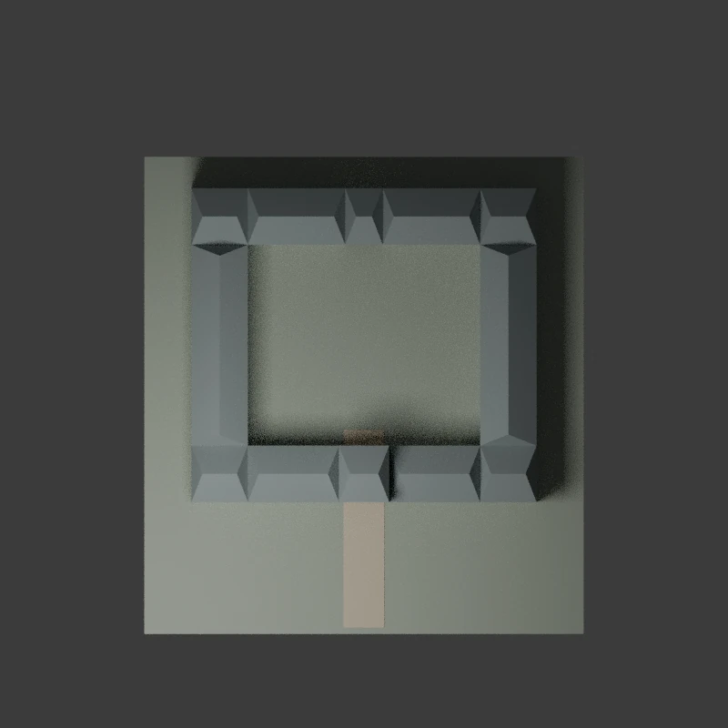

外墙
连续边界围住院落；低矮瓦盖与小角屋建立轮廓。
模型研究 / 孙吴鄂州陶院落启发
让屋与墙分开，
读出院落层次。

01 / 不是一圈房子
重点不是填满边界，而是让四种关系各自可读。
连续边界围住院落；低矮瓦盖与小角屋建立轮廓。
墙与内屋之间留空。它让外圈与屋面不再粘成一体。
三面两坡屋顶朝向院心，与门楼、角屋的多坡顶区别。
以中央空处组织视线，不先用道具填满生活想象。
02 / 同一语言，三种布局
三种几何变体都是原创重组，不是三件出土建筑，也不是升级序列。

前场加深，正门形成清楚的进入方向。

扩大中央空处，偏门与折线路径改变院内留白。

右厢缩短并内退，露出侧面小空地；不指认历史作坊。
缩到聚落尺度，通隙会先消失。当前先检查外圈、屋顶群与院心留白，不把近景看得见等同于远景可读。真实相机与同屏规模未定，尚不设像素或 LOD 预算。
美术对照：Anya Jo Elvidge ·《Total War: Three Kingdoms》战役地图 ↗。屋顶群与周围空地的分离值得观察；只是现代读图参考，不是吴地建筑史证。
| 方案 | 宽 × 深 | 门偏移 | 前场深度 | 右厢内退 / 缩短 |
|---|---|---|---|---|
| A · 门前侧重 | 11 × 10 | 0 | 3.2 | 0 / 0 |
| B · 庭内生活 | 13 × 12 | -1.1 | 2 | 0 / 0 |
| C · 侧院作业意向 | 12 × 10.5 | 0.8 | 2.4 | 0.65 / 2.2 |
俯视用于对照边界、屋面与负空间；各图为适配画面的构图，不是等比例尺，也不是已确定的游戏相机。
03 / 让实物纠正模型
首轮根据小图误把内屋贴到外墙。重新查看馆方高清图后，通隙成为必须保留的结构关系。

屋与墙近乎连圈，外边界与内屋混在一起。
拆开外墙与内屋；门楼、角屋、内屋分别处理屋顶。
保留的是看得见的关系。通隙宽度、完整屋面、墙木做法与配色仍是原创推定；实物裂损没有变成模型的设计缝。
04 / 来源与边界
主参考：中国国家博物馆「孙将军门楼陶院落」。馆方展目记为三国·吴，1967 年湖北鄂州出土。
围合边界、中央空处、前后门、前门上楼、四角小角屋，以及外墙与内屋间的分离关系。
国博 · 藏品解说 ↗尺度、比例、三种布局、路径、材料和铺瓦细节。不称孙述实宅或普通民居通式；小角屋不扩写成四座战斗塔。
不混用广州麻鹰岗东汉同名陶院落，不加明清垂花门或翘角兽饰。
本页图像均来自原创模型。馆方照片仅内部核对，不随页面与源包分发。完整公开参考说明 ↗
05 / 继续观察
主图录无需 WebGL。可选观察器按需载入一件 GLB；它只是模型观察，不是空间设计轮。
三款最终模型与图版按逐文件哈希绑定；实际 GLB 已由 Three.js r180 CPU 解析。离线渲染和 CPU 解析不证明实时 GPU、手机真机、LOD、碰撞或导航表现。